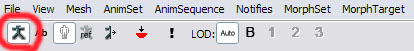
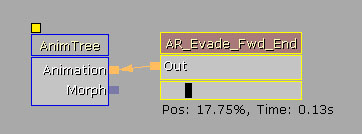
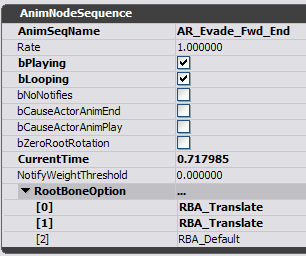

UDN
Search public documentation:
RootMotionJP
English Translation
中国翻译
한국어
Interested in the Unreal Engine?
Visit the Unreal Technology site.
Looking for jobs and company info?
Check out the Epic games site.
Questions about support via UDN?
Contact the UDN Staff
中国翻译
한국어
Interested in the Unreal Engine?
Visit the Unreal Technology site.
Looking for jobs and company info?
Check out the Epic games site.
Questions about support via UDN?
Contact the UDN Staff
RootMotion（ルート モーション）
ドキュメントの概要： UnrealEngine3? におけるルート モーションの使用法。 ドキュメントの変更ログ： Laurent Delayen により作成。概要
数学的方程式を使用してワールドのアクタを移動させることが可能です。プレーヤが加速する車の例を取ってみましょう。加速すると車の速度が増し、位置を更新します。次の基本方程式が得られます：Velocity = Acceletation * DeltaTime; Position = Velocity * DeltaTime;車ができるだけリアルに感じられるようにするために、friction(摩擦)、friction (重力)など多くのパラメータを計算に追加できます。機械的なオブジェクトを正確にシミュレートすることは容易ですが、生き物を正確にシミュレートするのはずっと困難です。人間、馬、あるいは猿を例にとってみましょう。動作は非常に不規則で、方程式で適切にシミュレートするのに十分なほど簡単なパターンには必ずしもなりません。数年内にはきっと、ゲームで使用されるリアルタイムの現実的な動作を生成することが可能になるでしょう。しかし、現在最も効率的な解決法は、アニメーションにアクタの動作をドライブさせることです。これが、Root Motion です！ このアイディアは、複雑な動作をアニメーションに焼き付けるというもので、通常、骨格メッシュのルート ボーンになされます。したがって名前が、Root Motion です。ルート ボーンのモーションは、アニメーションから抽出され、アクタを動かすためにゲーム物理に送られます。 アニメーション システムの概要は、 アニメーション システムの概要 ページを参照してください。
メッシュで Root Motion を使用する
Unreal Engine 3 内で、メッシュに Root Motion を使用させるのは簡単です。移動するルート ボーンを持つメッシュを、インポートするだけです。Root Motion のプレビューは、 AnimSetEditorUserGuideJP (アニメーション セット ビューア) を使ってできます。RootMotion をプレビューする
AnimSetViewer で、プレビューしたいアニメーションを選択します。初めて AnimSetViewer を使用する場合は、 AnimSet ビューア ユーザーガイド を参照して、システムを簡単におさらいしてください。 ツールバーのボーン表示を必ずオンにしてください。次のボタンをオンに切り替えるとできます。
これによって、SkeletalMesh (骨格メッシュ) のボーンが表示され、Root Bone (ルート ボーン) のプレビューも表示されます。 上の図は、最初のフレーム上のメッシュです。下の図は、アニメーションの最中のメッシュです。
上の図は、最初のフレーム上のメッシュです。下の図は、アニメーションの最中のメッシュです。
 Root Motion を示している赤い線があります。これは、アニメーションの最初のフレームと現在のフレームとの間の変換です。これが、アクタが移動する距離です。
紫の線は、ルート ボーンがメッシュ コンポーネントのオリジンへ変換されることを示します。メッシュはルート ボーンがオリジンから開始することを強制されません。もしそうである場合は、赤い線と紫の線がオーバーラップします。
Root Motion を示している赤い線があります。これは、アニメーションの最初のフレームと現在のフレームとの間の変換です。これが、アクタが移動する距離です。
紫の線は、ルート ボーンがメッシュ コンポーネントのオリジンへ変換されることを示します。メッシュはルート ボーンがオリジンから開始することを強制されません。もしそうである場合は、赤い線と紫の線がオーバーラップします。
ゲーム中にRoot Motionを使用する
ゲーム中に Root Motion を使用するには、まず AnimNodeSequence (アニメーション ノード シーケンス) 上で使用可能にします。AnimNodeSequence は、アニメーション再生の役割を果たす、AnimTree の一部であるノードです。これを使用して、アニメーションに関連のある Root Motion のオプションをコントロールできます。
上のイメージは、非常に簡単な AnimTree のセットアップです。AnimNodeSequence が、Root Motion に設定されています。
以下が、Root Motion に影響する AnimNodeSequence のパラメータです。| bZeroRootRotation | ルート ボーンの回転を(0,0,0)にロックします。 |
| RootBoneOption[0] | メッシュ ローカル スペース軸 X に対するルート ボーン オプション |
| RootBoneOption[1] | メッシュ ローカル スペース軸 Y に対するルート ボーン オプション |
| RootBoneOption[2] | メッシュ ローカル スペース軸 Z に対するルート ボーン オプション |
- RBA_Default。デフォルトの動作です。アニメーションからのルート変換のままです。所有するアクタ動作には影響しません。
- RBA_Discard。すべてのルート ボーンの動作を破棄して、最初のフレーム位置にロックします。
- RBA_Translate。アニメーション上のルート動作を破棄します。所有するアクタに速度を転送します。
- 同時に数個のルート モーション アニメーションを再生できます。ルート モーションはツリーの上に適切にブレンドされ、次に所有するアクタに送られます。
- ルート モーションは、ループ アニメーションを適切にサポートします。
| bForceDiscardRootMotion | ゼロの回転でローカル スペースのオリジンにロックされるようにルート ボーンを強制します。 |
| bRootMotionModeChangeNotify | 所有するアクタに RootMotionModeChanged() イベントを呼び出します。 |
| RootMotionMode | メッシュがルート モーションをどのように使用する必要があるかを記述します。 |
- RMM_Ignore。何もしません。
- RMM_Translate。ルート動作デルタとともにアクタを直ぐに移動させます。これは、アニメーション後直ぐ起こります。ゲーム中の物理は使用されません。（登ったり、スライドしたり、落ちたりせず、eventBump() などのスクリプト通知をトリガーしません。）
- RMM_Velocity。ルートモーションから速度の大きさを得て、その値を使ってアクタの最大速度を制限します。次のフレームで発生してオーナーであるアクタを物理的に制限し、従って物理的な運動 (上昇、横滑り、落下) に従い、スクリプト通知の送信も続けます。このモードでは、Unreal Physics が続けて動きを提供し、アニメーションは速度の大きさを固定します。相互作用による反応時間や動きの精度を維持したい場合に便利なモードです (例えば、パス進行や、指定位置への到達、入力コントローラとの適度な反応時間など)。
- RMM_Accel。このモードでは、ルートモーションは直接 Unreal Physics に送られます。つまり、パス進行や入力から設定される Pawn の加速度が、アニメーションのルートモーションによってオーバーライドされることになります。Unreal Physics は、アニメーションのルートモーションに合わせてアクタを移動します。上昇、横滑り、落下などもサポートします。組み立てられた複雑な動きに Pawn を合わせると同時に、ワールドの地勢 (topography) や衝突も順守したい場合に利用します。
シームレスなトランジション
トランジションの問題に直面することがあるでしょう。ゲーム中の物理動作から、アニメーションの動作にどのようにシームレスにトランジションをするのでしょうか？ 新しい RootMotionMode をメッシュにセットすると、アニメーションが新しいモードで処理された後、正確に １ チックで割り込みます。こうして、すでに処理された可能性のあるゲーム中の物理との衝突を防ぎます。これはコンテキストに応じてせいぜい２つのフレームの遅れで、異なるタイミングで発生します。しかしトランジションをシームレスで簡単にする方法があります。- RMM_Translate。いつモードがセットされるかに依存します。ゲーム中の物理が処理される前か後かである可能性があります。また、アニメーションが計算される前か後にセットされることもあります。ただ一つ確かなのは、アニメーションが新しいモードで処理された後、正確に 1 チックでルート モーションが適用されるということです。トランジションを簡単にするには、フラグがあります。 bRootMotionModeChangeNotify は、いつルート モーション モードが変更されるかを通知します。これにより、所有するアクタにイベントがトリガーされて、トランジションを読み取ることができます。イベントが呼び出されると、ルート モーションがいつ次のチックに適用されるかが確実に分かるので、ここでトランジションを処理できます。例えば、物理動作（プレーヤ入力、加速度、速度）を止めることができ、ルート モーションが止まったところから動作を処理すると問題なく仮定できます。
- RMM_Velocity。このモードは、必ず 1 フレームの遅れとともに適用されます。しかし、上記と同じ理由から、アニメーションが計算された後の１チックでルート モーションが必ず適用されます。このモードでのトランジションはずっと簡単です。というのは、アクタ上に強制された動作を維持し、速度の絶対値を制限するためにルート モーションが割り込むのを待つだけだからです。動作の強制には、いくつかの方法があります。プレーヤ上に入力を強制するか、Controller.bPreciseDestination を使用するか、またはアクタの加速度/速度をコントロールする方法です。
ルートモーションの使用例 (プログラマー用)
以下は、ルートモーションのサンプルユースケースです。RBA_Translate Unreal Script における例
次のサンプル コードは、ルート モーション ジャンプ アニメーションを再生する Pawn の例です。このコードをそのままではコンパイルできません。これは、例として提供されたものです。
simulated function PlayJumpAnimation(AnimNodeSequence SeqNode)
{
// ジャンプのアニメーションを再生
SeqNode.SetAnim('Jump');
SeqNode.PlayAnim(FALSE, 1.f);
// アニメーションノードのルートモーションを有効にする
SeqNode.RootBoneOption[0] = RBA_Translate;
SeqNode.RootBoneOption[1] = RBA_Translate;
SeqNode.RootBoneOption[2] = RBA_Translate;
// アニメーション再生の際、アニメーションノードからアクタに通知
SeqNode.bCauseActorAnimEnd = TRUE;
// メッシュによるルートモーションを用いたアクタの変形
Pawn.Mesh.RootMotionMode = RMM_Translate;
// 物理動作からアニメーション動作へのシームレスな移行のため
// ルートモーション適用の際、メッシュからユーザに通知
Pawn.Mesh.bRootMotionModeChangeNotify = TRUE;
}
simulated event RootMotionModeChanged(SkeletalMeshComponent SkelComp)
{
/**
* ルートモーションが次のフレームで作動し、
* ポーンの動作が消え、ルートモーションが有効になる
*/
if( SkelComp.RootMotionMode == RMM_Translate )
{
Velocity = Vect(0,0,0);
Acceleration = Vect(0,0,0);
}
// 無効通知
Pawn.Mesh.bRootMotionModeChangeNotify = FALSE;
}
simulated event OnAnimEnd(AnimNodeSequence SeqNode)
{
// ジャンプ終了
// ルートモーションの破棄。メッシュは同位置に停止
// 新たなアニメーションへの自然な動きによる移行のため
SeqNode.RootBoneOption[0] = RBA_Discard;
SeqNode.RootBoneOption[1] = RBA_Discard;
SeqNode.RootBoneOption[2] = RBA_Discard;
// メッシュのルートモーション使用を終了
Pawn.Mesh.RootMotionMode = RMM_Ignore;
}